Beypazarı mega yerleşiminden butik otele, çelik sistem villalardan 100'ün üzerinde havuz projesine uzanan referans arşivimizi inceleyin.


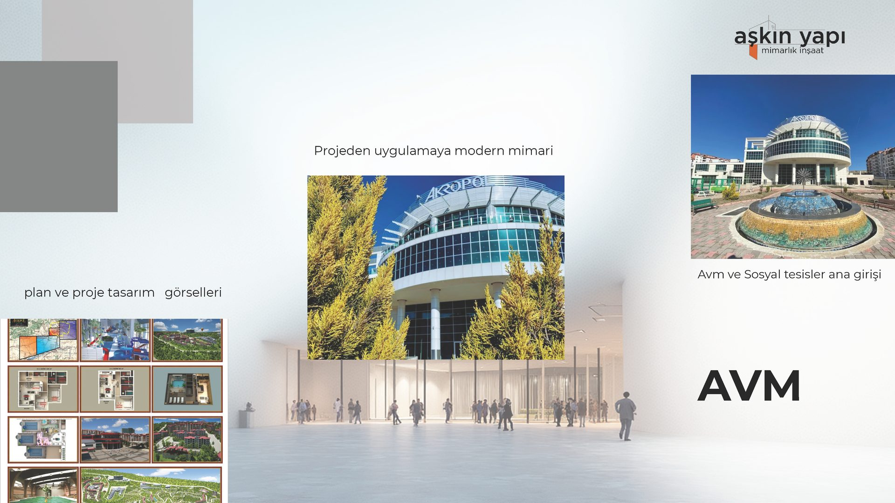
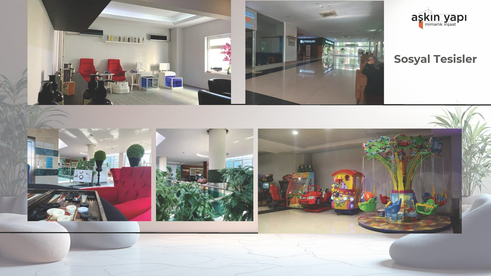
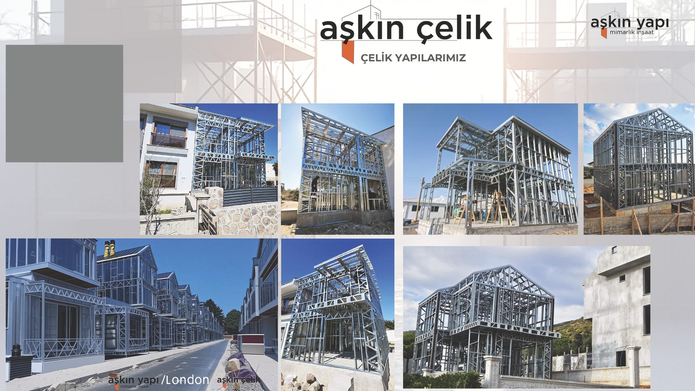
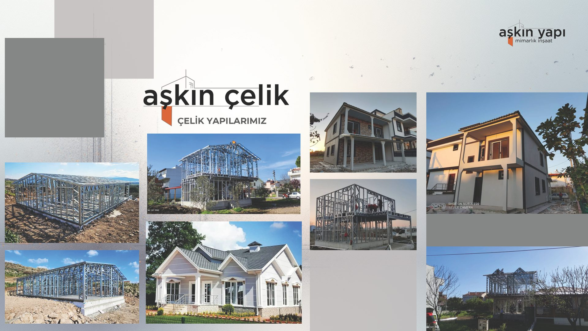
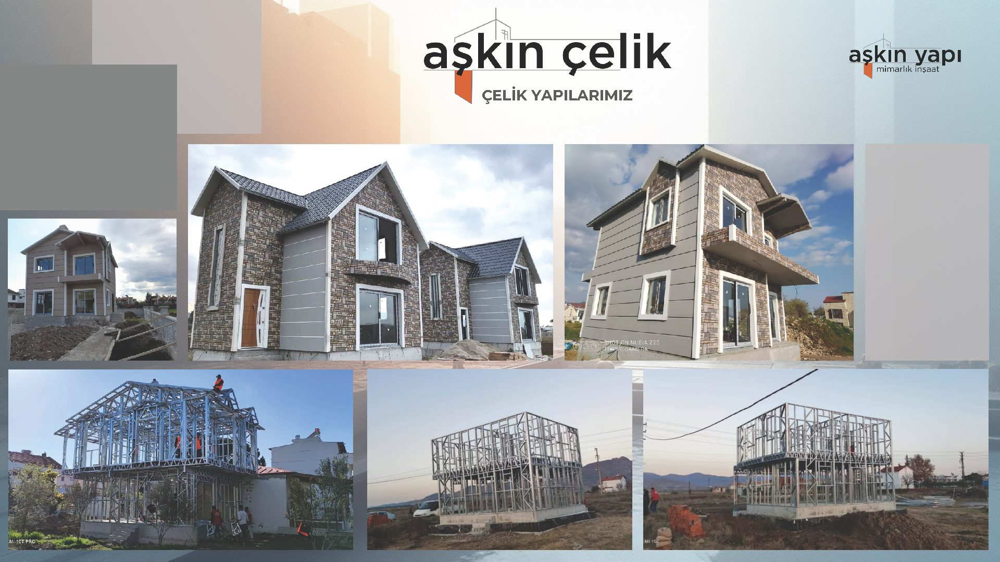
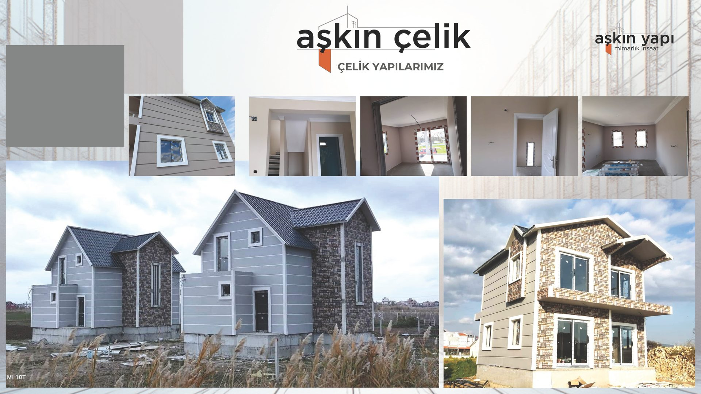
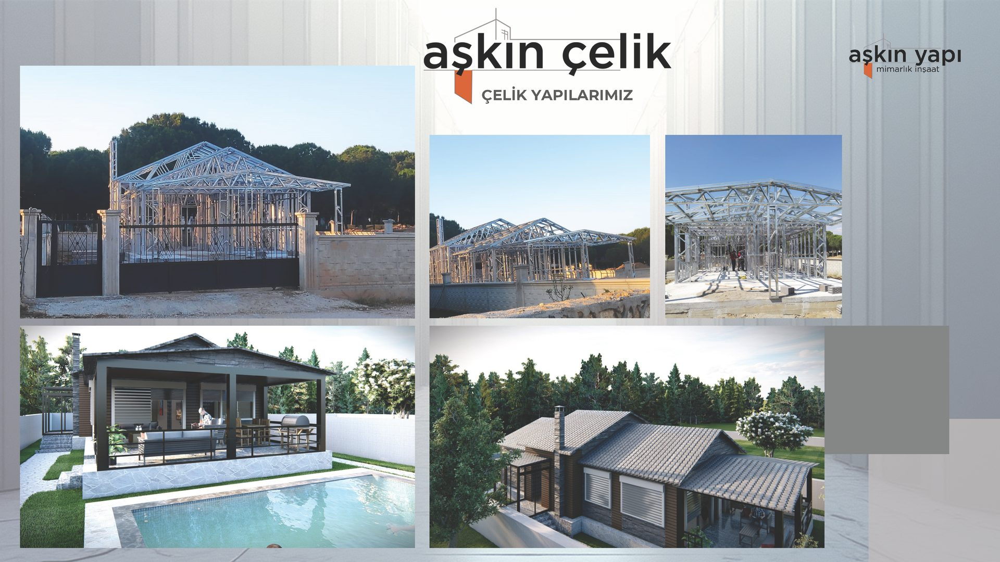
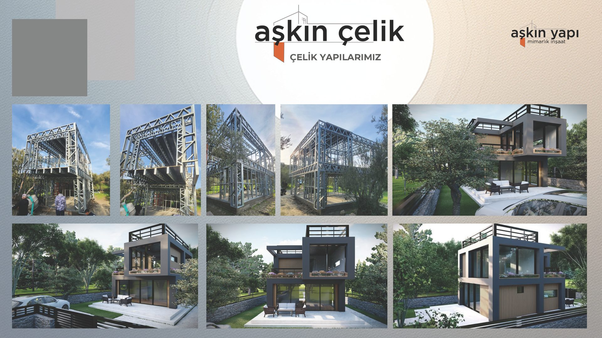
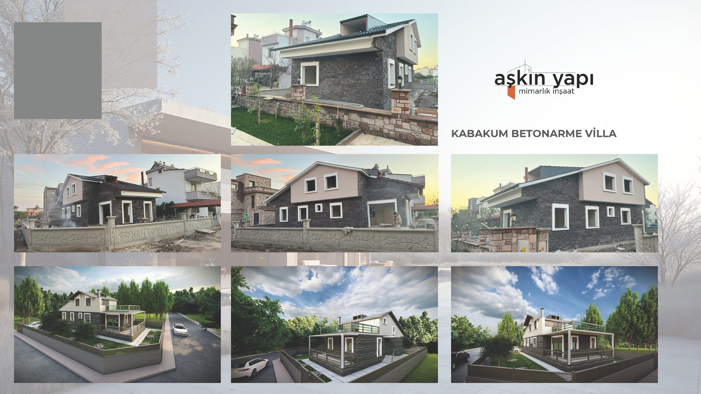
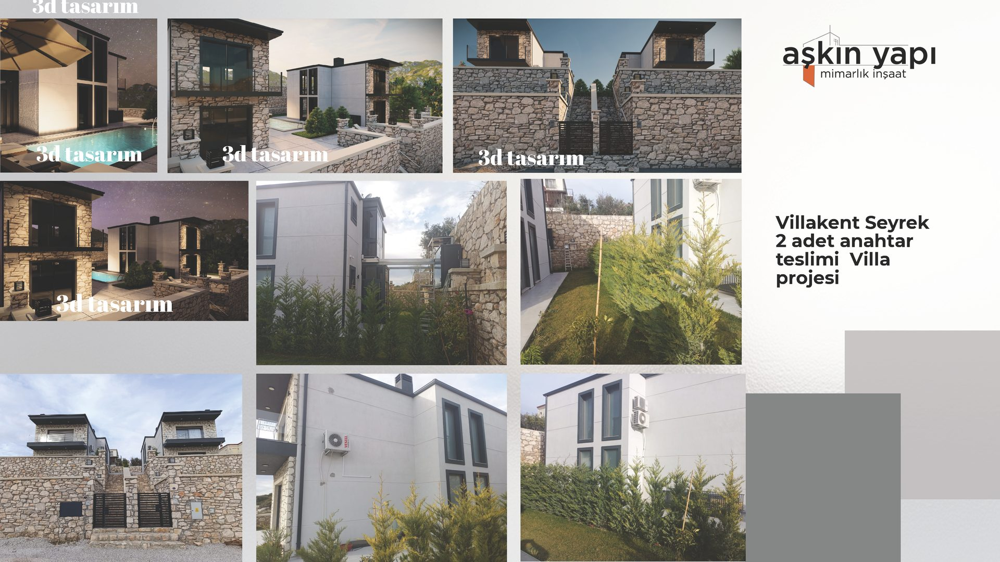


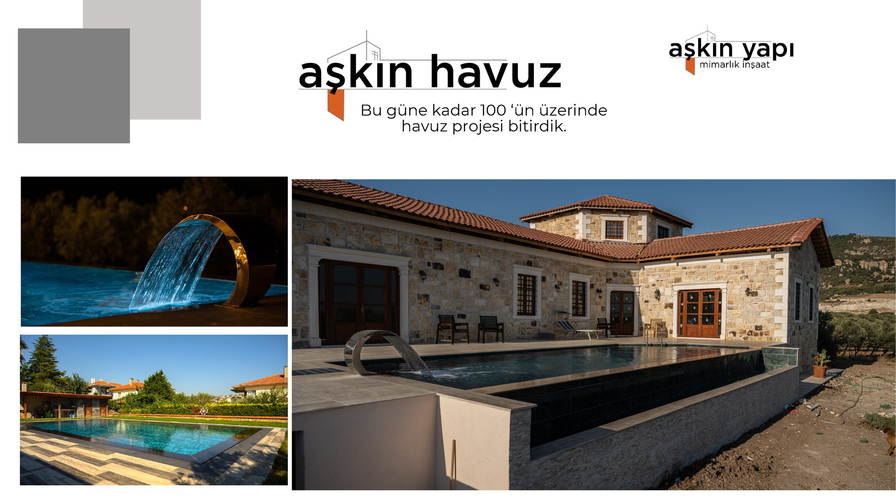
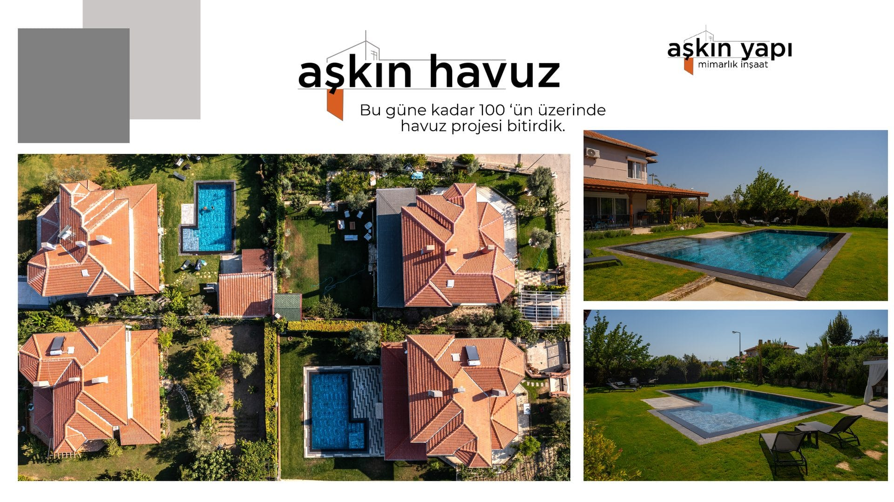
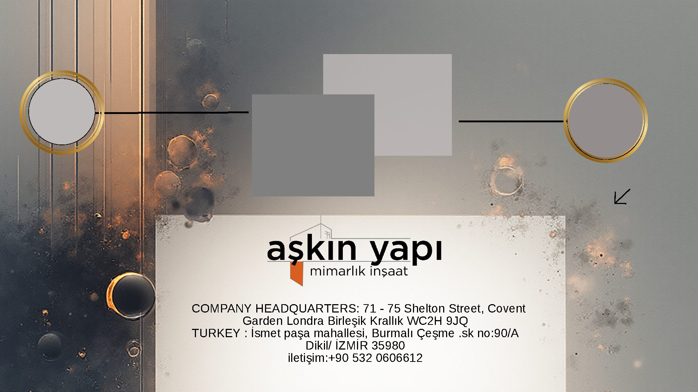
2011'den bu yana edindiğimiz birikim, her ölçekteki projeye uygulanabilir kurumsal çözümler sunmamızı sağlamaktadır.